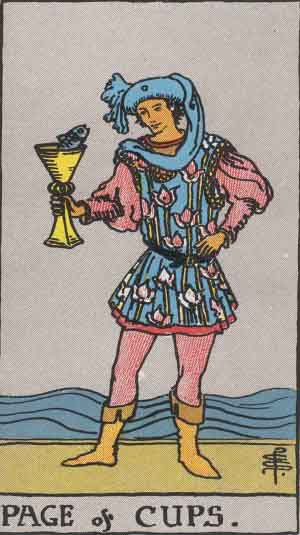

Main | Arcana | Cups | Pentacles | Swords | Wands
Page of Cups

Upright
Flow, Synchronicity
- Open up! Wear your heart on your sleeve!
- Are you looking at something new? Be new at things. It's good!
- Explore learning. Let your unconscious mind guide you. How does it speak to you?
- You must be open to the unexpected, occassionally bizarre impulses of your creative spirit.
- Let your imagination be free. Choose to believe in one impossibility.
- Intuitive steps should aways be taken.
- A heart in love with beauty never grows old.
Reversed
New Ideas, Emotional Immaturity
If you have a creative idea, now is the time to express it! It's better to try and to fail than to have not tried at all. Seriously, what have you got to lose? Weigh the decision and act on it. Are you dealing with doubt? How are you any different from everyone else? Open yourself to your own intuition and see where you go!